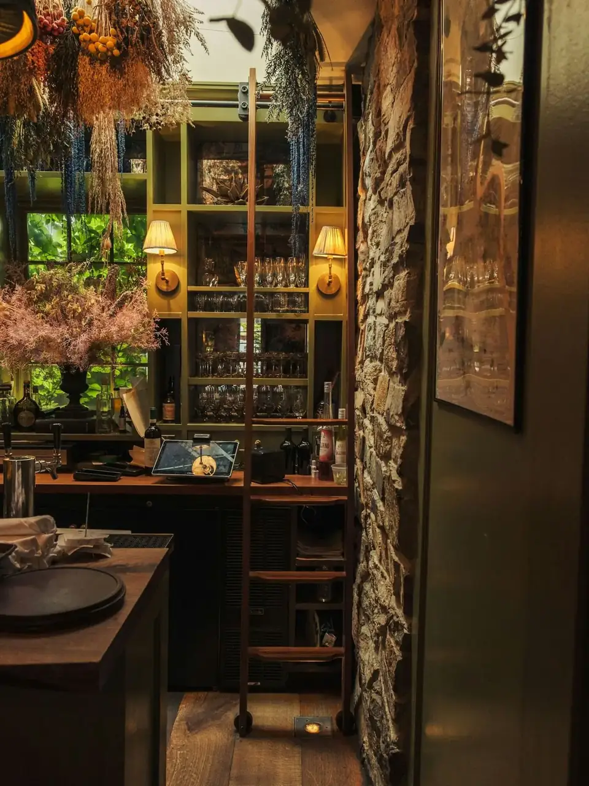
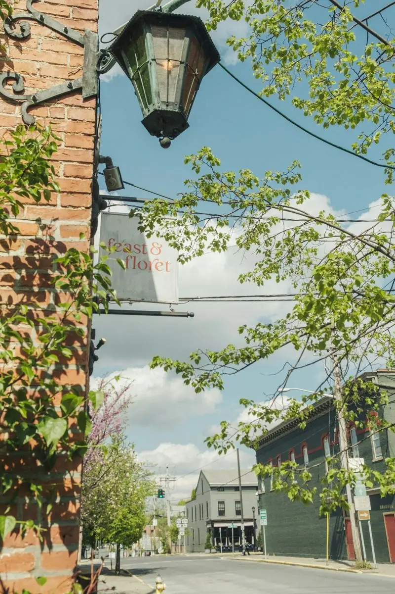
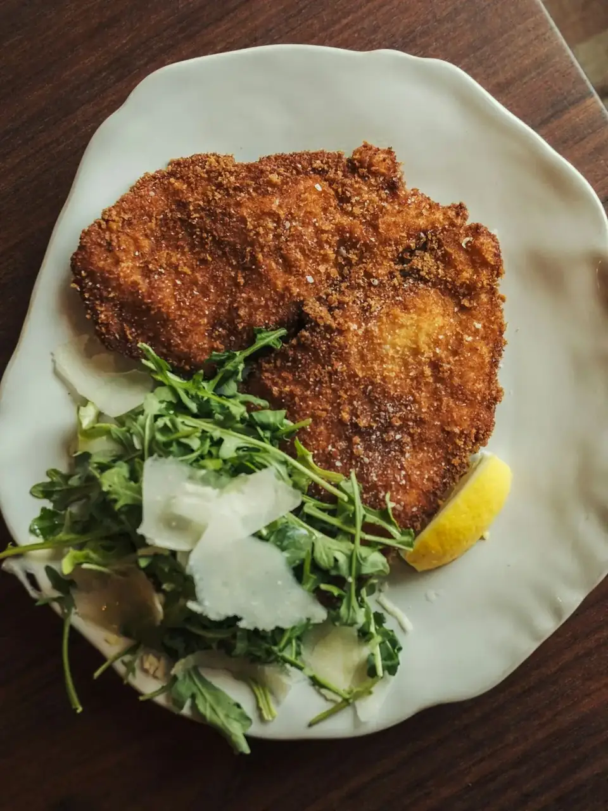
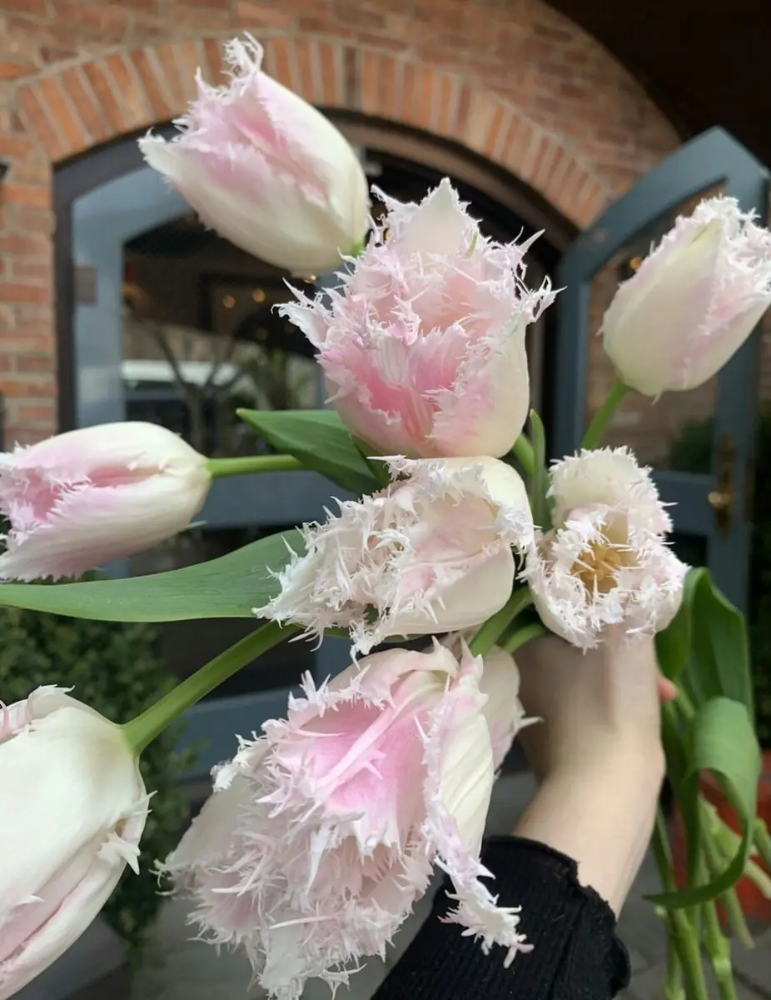
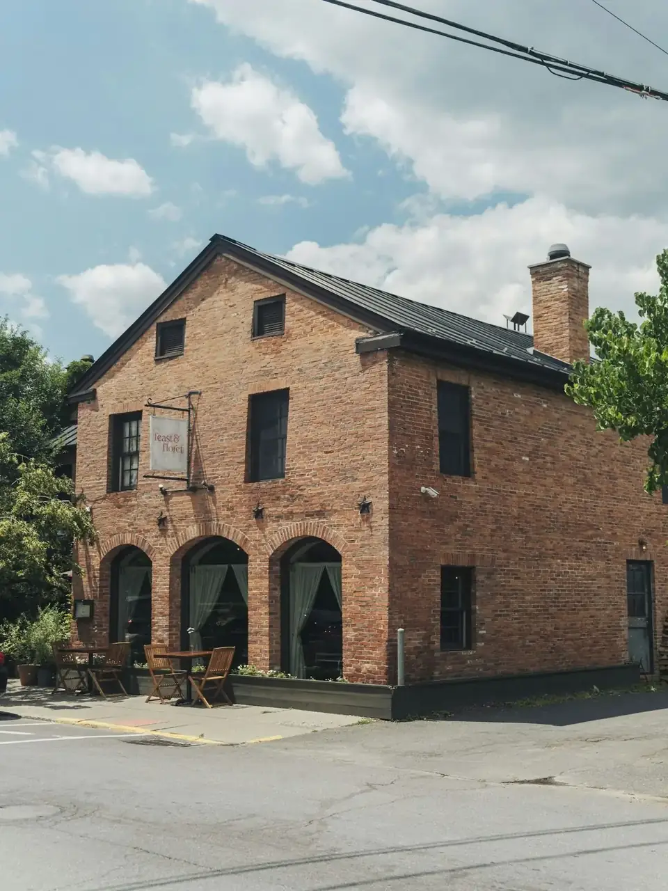

- DinnerEvery night 5–10 pm
- LunchFri–Sun 12–3 pm
- Where13 South 3rd St, off Warren
- BookResy, or (518) 822-1500
The room
Brick, wood paneling and candlelight.

The house on South Third
Four things under one roof.
- I · The buildingA blacksmith shop and carriage house.Two stories of 19th-century brick a few steps off Warren. The wood-burning oven and fireplaces stayed.
- II · The floretA flower stall in the dining room.Fresh and dried flowers, seasonally sourced from the farm and Hudson Valley growers.
- III · The farmTwelve miles to the table.Honey and produce from their own farm outside Hudson; bread from Sparrowbush, cheese from Talbott & Arding.
- IV · The hearth“Like having a party here every night.”Jason Denton, to The Daily Gazette.

From the kitchen
Chicken Milanese, wild arugula, Grana Padano.


The Floret of Feast
Flowers, by the stem or the armful.
Fresh and dried, seasonally sourced from the farm and other Hudson Valley growers. Order a bouquet ahead for pickup, or stop in and they’ll make one. Design classes and small weddings too.
Who makes the feast possible
Foraged, farmed and up the road.
- BreadSparrowbushLivingston, NY
- CheeseTalbott & ArdingHudson
- ProduceBlue Star FarmStuyvesant, NY
- FruitMead OrchardsTivoli, NY
- ChickenYellow Bell FarmPasture-raised
- ForagedMushroomsPicked by the kitchen
- Pork & lambKinderhook FarmGrass-fed
- Dried flowersThe Quiet BotanistWarren Street
Groups & private dining
Eight or more? A prix fixe feast.
Groups of eight and up dine family-style from a set menu. Small weddings and flower design classes can be arranged with the floral team.
Ask about private diningFind us
Red brick on South Third Street.

Visit
Dinner every night, lunch on weekends.
| Mon–Thu | Dinner 5–10 pm |
|---|---|
| Fri–Sun | Lunch 12–3 pm · dinner 5–10 pm |
(518) 822-1500